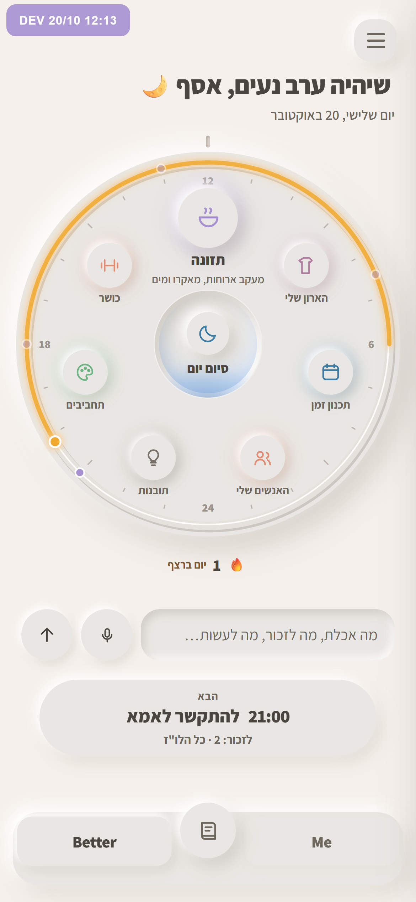

עברית ▾
ברוכים הבאים ל־
Better Me
התכוננו להפוך לגרסה הטובה ביותר של עצמכם.
בלי חשבון. הכול נשאר על הטלפון הזה.
נתחיל
היי, אני בים.
איך קוראים לך?
רק כדי שאדע איך לפנות אלייך. אפשר גם בלי.
אפשר להמשיך
אולי אחר כך
איך לפנות אלייך?
בעברית כל משפט נושא מגדר, אז זה משנה איך אדבר איתך בכל מסך.
בלשון נקבה
בלשון זכר
מה חשוב לך?
אפשר להמשיך
הבנתי
בערב
בבוקר
:
קבעתי
מה היה הרגע הכי טוב שלך היום?
אפילו רגע קטן.
שמרתי
אין לי משהו היום
1
יום
יופי
רק פעם ביום, ורק בשעה שבחרת. בלי פרסומות ובלי הודעות אחרות.
כן, תזכיר לי
לא עכשיו
